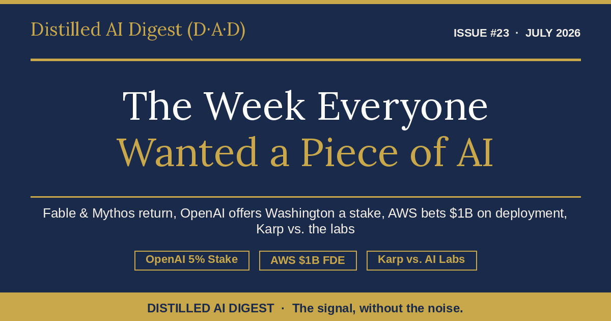

The Week Everyone Wanted a Piece of AI
Fable 5 and Mythos 5 return after the first export controls ever applied to a model. OpenAI offers Washington a $42.6B stake. AWS bets $1B that deployment is the real bottleneck. Palantir’s CEO calls the industry “effing insane.” Ownership became the story.
Read issue →